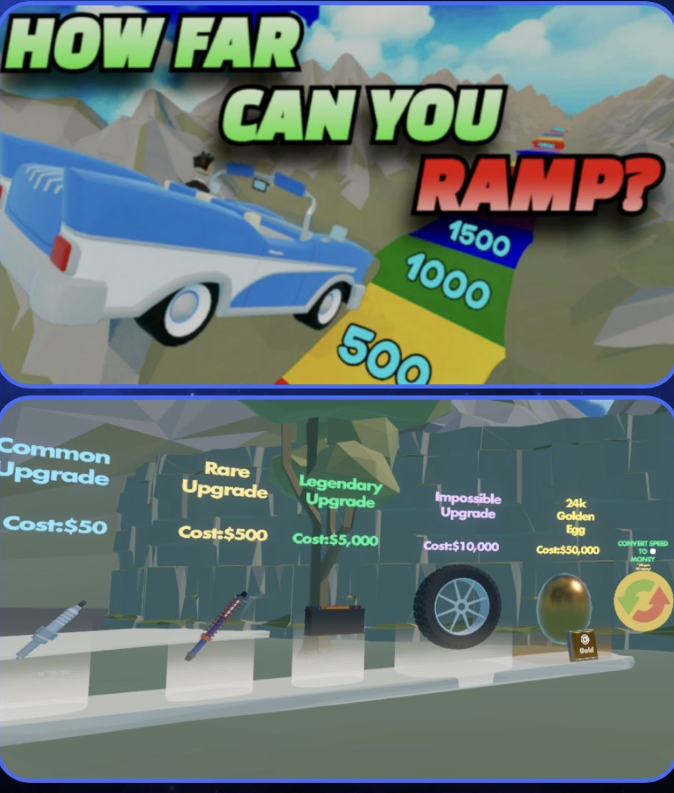

Project image unavailable. See the project details below.
01 · Solo creator · Unity and visual scripting · Published June 25, 2023
How Far Can You Ramp?
Published June 2023 · 906.4K creator-reported visits. I built a driving game where each launch gives players a chance to travel farther than before. I implemented vehicle launches, distance-based earnings, speed upgrades, randomized rewards, customization, rebirth progression and spawn safety rules.
Core loop: Choose a vehicle → launch → earn based on distance → upgrade → reach farther → rebirth for a permanent earnings bonus.
Design problem
A single launch is entertaining once. I wanted each launch to contribute toward a clear next goal without requiring complicated menus.
Implemented response
Distance becomes spendable progress, so every run feeds the next decision. Upgrades make improvement tangible; rebirth trades short-term power for a permanent earnings bonus. I also added a spawn safety rule after vehicle collisions disrupted the start of a run.